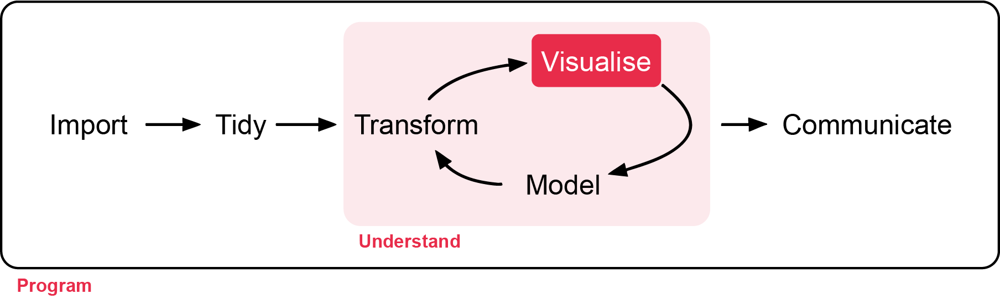
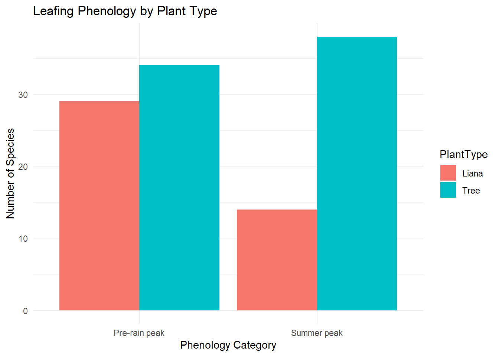
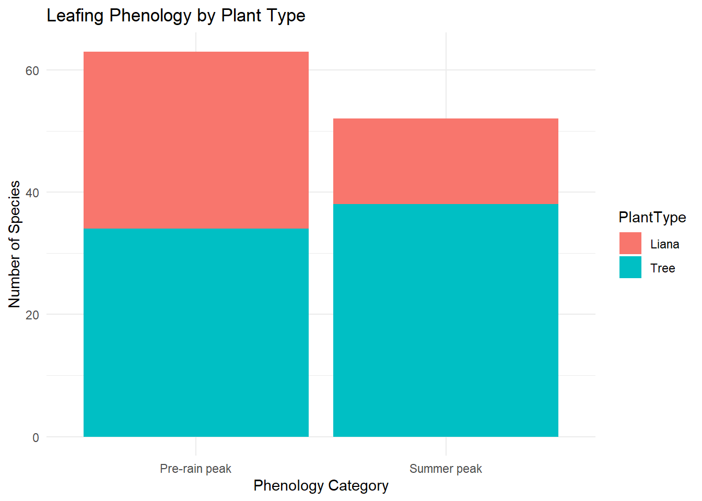
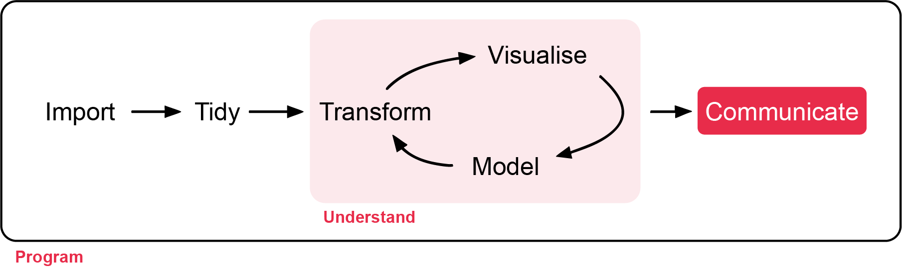
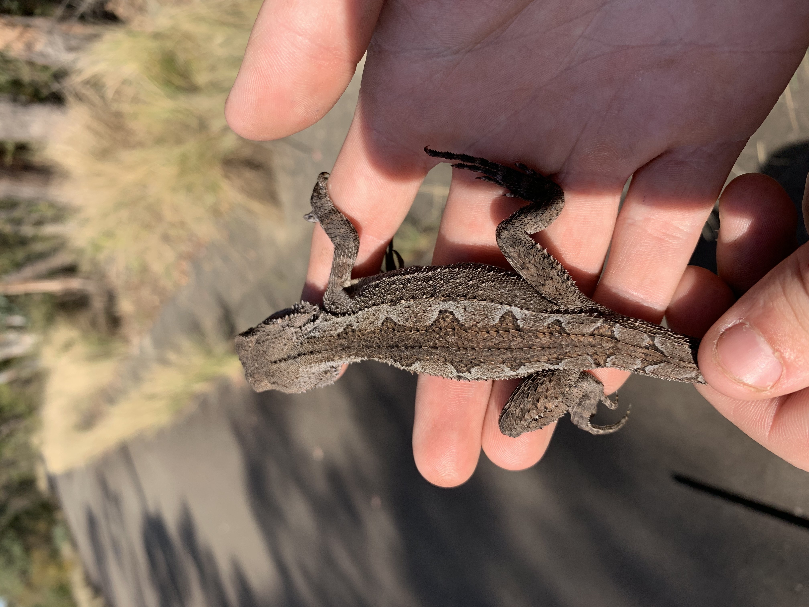
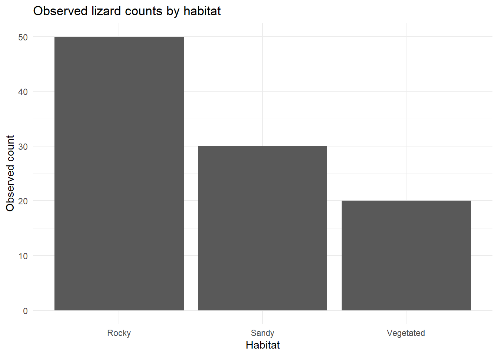
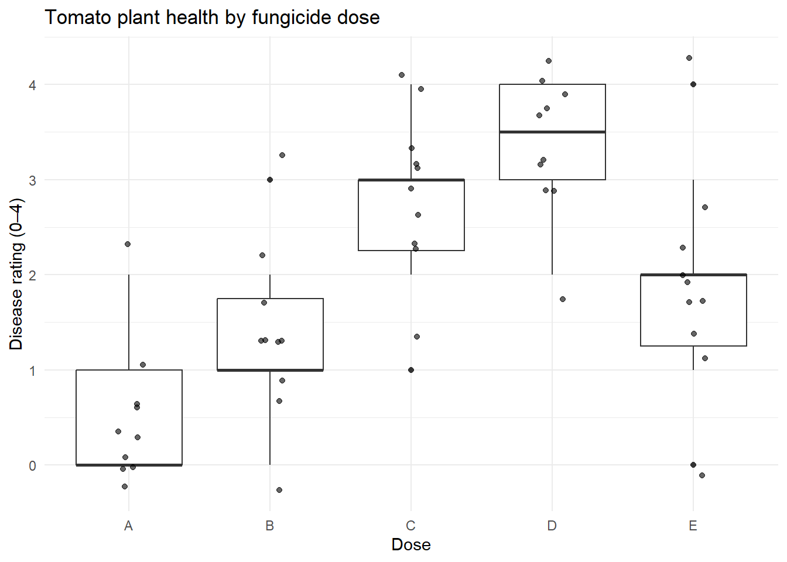

Week 6 - Non-parametric tests and an introduction to analysis of two-way table of counts.
In this workshop, you will learn about non-parametric tests and some techniques for analysing a two-way table of counts. Workshop materials are available in the github repository ECS200.
We start this week with the analysis of count data.
Analysis of count data focuses on situations where observations are recorded as frequencies in categories, rather than as continuous measurements. In ecology, this often occurs when researchers count the number of individuals, events, or occurrences within defined groups, such as the number of insects on different plant species or the number of animals observed in different habitats.
For one categorical variable the data is presented in a one-way table, which summarise counts for a single categorical variable and visualised with a bar graph (not covered below, but resources can be provided if needed for your project).
For two categorical variables the data is presented in a two-way table of counts, which summarise counts across two categorical variables simultaneously and can be visualised with a mosaic plot. Statistical analysis of these tables typically evaluates whether the observed counts differ from expected counts.
Our second focus this week is non-parametric tests.
Non-parametric tests are statistical methods that make fewer assumptions about the underlying distribution of the data than traditional parametric tests. Parametric methods, such as the t-test, analysis of variance (ANOVA), or Pearson correlation, typically assume that the response variable follows a normal distribution (or that the errors follow a normal distribution) and that variances are similar among groups (the equal variances assumption). In contrast, non-parametric methods do not require these assumptions and instead typically focus on other approaches such as analysing the ranks of the data rather than the raw values.
Non-parametric methods are particularly useful when sample sizes are small, when data are strongly skewed, when outliers are present, or when measurements are ordinal rather than continuous. Below is a table which names four non-parametric approaches to research questions we have covered in our first year statistics refresher.
Method
Data type
Parametric equivalent
Ecology example
Mann–Whitney U Test (Wilcoxon Rank-Sum)
Continuous or ordinal response with two independent groups
Two-sample t-test
Compare plant biomass between grazed and ungrazed grassland plots
Kruskal–Wallis Test
Continuous or ordinal response with more than two independent groups
One-way ANOVA
Compare species richness across low, mid, and high elevation sites
Wilcoxon Signed-Rank Test
Continuous or ordinal paired observations
Paired t-test
Compare bird abundance at the same wetlands before and after restoration
Spearman Rank Correlation
Two continuous or ordinal variables
Pearson correlation
Examine the relationship between elevation and species richness
A recent paper discusses the application of chi-squared tests in forest ecology studies and demonstrates the by hand calculations of the chi-squared test.
The paper gives a description of case study 1 as: We wish to know whether tree species and liana species (woody climbers) behave independently in initiating the new leaf flush timing activity in the dry deciduous forests that occur in southern Eastern Ghats. We can use the data of the number of tree species showing new leaf flush activity in the peak summer and just before rains and number of liana species featuring their peak leaf flush activity during summer period or just before the rains. Here we want to find out that whether tree species and liana species are independent in their leaf flush activity.
The paper goes on to state the null and alternative hypotheses as follows:
\(H_0\): There is no difference between the proportion of tree species and liana species in their timing of the leaf flushing activity either in summer period or just before the onset of rains
\(H_1\): There is a marked difference between tree species and liana species in their leaf flushing activity.
While not stated, we will use a significance level of 0.05.
Visualisation of the data
This data is in Table 1 of the paper, so lets create a small data frame with the two-way table of counts.
## libraries you'll need in this praclibrary(tidyverse)# Create simple matrixleaf_mat <-matrix(c(38, 34, 14, 29),nrow =2,byrow =FALSE)rownames(leaf_mat) <-c("Summer peak", "Pre-rain peak")colnames(leaf_mat) <-c("Tree", "Liana")## Look at it, should be 2 by 2leaf_mat
Tree Liana
Summer peak 38 14
Pre-rain peak 34 29
It is useful in reporting to have the sample proportions so let’s calculate those.
Tree Liana
Summer peak 0.5277778 0.3255814
Pre-rain peak 0.4722222 0.6744186

The data is most efficiently presented as a two-way table of counts, however the tidyverse does not consider this data as “tidy”. The concept of tidy data provides a consistent and structured way to organise datasets for analysis and visualisation. A dataset is “tidy” when it follows three simple rules: each variable forms a column, each observation forms a row, and each type of observational unit forms a table. This structure ensures that data are stored in a predictable format, making them easier to manipulate, model, and visualise. Tidy data is foundational to the use of the tidyverse.
The process of transforming raw data into tidy data, often referred to as data wrangling, is therefore sometimes a critical first step in analysis. The tidyr package provides tools such as pivot_longer() and pivot_wider() to reshape datasets into tidy form. Here we use pivot_longer() to reformat the data and then visualise the data.
## change the data typeleaf <-as.data.frame(leaf_mat)# Convert from wide to long formatleaf_long <- leaf %>%mutate(Peak =row.names(leaf)) %>%pivot_longer(cols =c("Tree", "Liana"),names_to ="PlantType",values_to ="Count")# plot the leaf_long data by peak and count, grouped by plant typeggplot(leaf_long, aes(x = Peak, y = Count, fill = PlantType)) +geom_bar(stat ="identity", position ="dodge") +labs(title ="Leafing Phenology by Plant Type",x ="Phenology Category",y ="Number of Species" ) +theme_minimal()

We can change position from dodge (the bars are side-by-side) to stack which gives a different visualisation.
# Plot by stackggplot(leaf_long, aes(x = Peak, y = Count, fill = PlantType)) +geom_bar(stat ="identity", position ="stack") +labs(title ="Leafing Phenology by Plant Type",x ="Phenology Category",y ="Number of Species" ) +theme_minimal()

Assumptions
One of the assumptions of the chi-squared test involves checking the expected counts as we need that no more than 20% of expected counts below five, and none are below one.
While these can be done by hand (you can see this in the paper), we will use R to do these calculations for us.
We see that the test statistic is 4.44 and this is compared to a chi-squared distribution with one degree of freedom and the probability of getting this test statistic or a larger one is 0.035. Therefore, as this is less than the significance level we reject the null hypothesis.
Report ready interpretation

A full interpretation of a regression model includes:
A conclusion with respect to the null hypothesis, supported by a p-value
A summary of what we learn from the modelling
For this model we have the following interpretation:
We investigated if there is no difference between the proportion of tree species and liana species in their timing of the leaf flushing activity either in summer period or just before the onset of rains and found a difference (p-value 0.035). For the tree species the proportion in the summer peak is 0.53 while for Liana is its 0.33.
What if the counts were small?
The chi-squared test of independence is most suitable when sample sizes are reasonably large and the expected cell counts are not too small. The underlying mathematics relies on an approximation to the chi-squared distribution, which becomes accurate when expected frequencies are sufficiently high. What do we do if the counts are small?
Fisher’s exact test is designed for situations where the expected counts are small (any expected count less than one or more than 20% less than five). As the name suggests, rather than relying on an approximation, it calculates the exact probability of observing a table as extreme as (or more extreme than) the one obtained, given the marginal totals. Because it is exact, it remains valid regardless of sample size, but it can become computationally intensive (take too long to run) for larger tables.
For an example, let’s use the same scenario as above, but assume less data was collected.
# Create simple matrixleaf_mat_small <-matrix(c(8, 7, 3, 7),nrow =2,byrow =FALSE)## Look at it, should be 2 by 2leaf_mat_small
[,1] [,2]
[1,] 8 3
[2,] 7 7
## try running the chi-squared testleaf_chisq_small <-chisq.test(leaf_mat_small, correct = F)
Warning in chisq.test(leaf_mat_small, correct = F): Chi-squared approximation
may be incorrect
leaf_chisq_small$expected
[,1] [,2]
[1,] 6.6 4.4
[2,] 8.4 5.6
We can see we get a warning from R about the approximation, and looking at the expected counts 25% of them are under 5. We can apply fisher exact test in R as follows.
fisher.test(leaf_mat_small)
Fisher's Exact Test for Count Data
data: leaf_mat_small
p-value = 0.4139
alternative hypothesis: true odds ratio is not equal to 1
95 percent confidence interval:
0.3835166 21.6064068
sample estimates:
odds ratio
2.562244
The results indicate that there is no statistically significant association between these variables (p = 0.41). That is, the observed differences in counts between trees and lianas across seasons could plausibly have arisen by chance.
The estimated odds ratio is 2.56, suggesting that trees are more likely than lianas to occur in the summer peak relative to the pre-rain peak. However, the 95% confidence interval (0.38 to 21.61) is very wide and includes 1, indicating substantial uncertainty in this estimate and reinforcing that the effect is not statistically significant.
Background
An ecologist studies a lizard species, the mountain dragon (Rankinia diemensis) and records how many individuals are found in three habitat types as follows:
# Might need to install knitr if using first time.library(knitr)habitat_data <-data.frame(Habitat =c("Sandy", "Rocky", "Vegetated"),Observed_count =c(30, 50, 20))knitr::kable(habitat_data, col.names =c("Habitat", "Observed count"))
Habitat
Observed count
Sandy
30
Rocky
50
Vegetated
20
\(H_0\): The three habitats are equally preferred
\(H_1\): The three habitats are not equally preferred
we will use a significance level of 0.05.

A captured mountain dragon (Rankinia diemensis) from the Blue Mountains. Photo by N Wu.
Visualisation of the data
ggplot(habitat_data, aes(x = Habitat, y = Observed_count)) +geom_col() +labs(title ="Observed lizard counts by habitat",x ="Habitat",y ="Observed count" ) +theme_minimal()

Assumptions
One of the assumptions of the chi-squared goodness-of-fit test involves checking the expected counts as we need that no more than 20% of expected counts below five, and none are below one. While these can be done by hand (you can see this in the paper), we will use R to do these calculations for us.
The data is based on counts as each lizard is classified by where it was detected
This assumption is met
Mutually exclusive categories
We assume the sampling was done such that we didn’t have a lizard go between areas
This assumption is met
Expected counts are large enough
The smallest expected count is 33.3 which is larger than 5.
This assumption is met
Independence
We think it likely each lizard was sampled once.
This assumption is met.
As the assumptions are all met we can review the model.
Modelling
We can now look at the modelling outcome.
lizard_chisq
Chi-squared test for given probabilities
data: habitat_data$Observed_count
X-squared = 14, df = 2, p-value = 0.0009119
Report ready interpretation
A full interpretation of a regression model includes:
A conclusion with respect to the null hypothesis, supported by a p-value
A summary of what we learn from the modelling
For this model we have the following interpretation:
A Chi-squared goodness-of-fit test was conducted to assess whether lizard counts were equally distributed across the three habitat types (sandy, rocky, and vegetated). The test showed a significant difference between the observed and expected counts, \(\chi^2(2) = 14\) giving a p-value of 0.0009.
This result provides strong evidence against the null hypothesis of equal habitat use, indicating that lizards are not distributed evenly across habitats. Instead, they appear to show a preference for certain habitat types. Inspection of the observed counts suggests that rocky habitats had more individuals than expected, while vegetated habitats had fewer, implying that rocky areas may provide more favourable conditions for these lizards.
Background
Murdoch has a long tradition of ecologists and statisticians working together. A 2020 paper by Michael Calver (ecologist) and Doug Fletcher (statistician) discusses the Kruskal-Wallis test as an alternative to one-way ANOVA for rank and ordinal data.
The paper has a fictitious set of data on plant health ratings for tomato seedling that we can analyse. The authors state “An experiment is designed in which 50 tomato plants are infected with tomato blight and then assigned at random to one of five dose levels of fungicide. The response of the plants is assessed on a five-point rating scale, so the data are ordinal and unsuited to a parametric test. The data is plant health ratings two weeks later with the following scale: 0 = dead, 1 = severely unhealthy, 2 = moderately unhealthy, 3 = minor symptoms, and 4 = healthy.”
The null and alternative hypotheses are as follows:
\(H_0:\) All doses have the same median plant health in tomato seedling infected with one of five doses
\(H_1:\) Not all doses have the same median plant health in tomato seedling infected with one of five doses
# libraries needed (only if not in your script already)# library(tidyverse)plant_long <- plant_health %>%pivot_longer(cols =everything(),names_to ="Dose",values_to ="Rating")plant_long$Dose <-factor(plant_long$Dose)## look at the two data setsglimpse(plant_health)
Rows: 50
Columns: 2
$ Dose <fct> A, B, C, D, E, A, B, C, D, E, A, B, C, D, E, A, B, C, D, E, A, …
$ Rating <dbl> 0, 1, 2, 4, 2, 1, 1, 3, 3, 1, 1, 1, 3, 3, 3, 0, 1, 1, 2, 4, 0, …
## get the median and IQRplant_long %>%group_by(Dose) %>%summarise(Median =median(Rating),Q1 =quantile(Rating, 0.25),Q3 =quantile(Rating, 0.75),IQR =IQR(Rating) )
# A tibble: 5 × 5
Dose Median Q1 Q3 IQR
<fct> <dbl> <dbl> <dbl> <dbl>
1 A 0 0 1 1
2 B 1 1 1.75 0.75
3 C 3 2.25 3 0.75
4 D 3.5 3 4 1
5 E 2 1.25 2 0.75
We can visualise the data to see the impact of dose on plant health.
ggplot(plant_long, aes(x = Dose, y = Rating)) +geom_boxplot() +geom_jitter(width =0.1, alpha =0.6) +labs(title ="Tomato plant health by fungicide dose",y ="Disease rating (0–4)") +theme_minimal()

Assumptions
Assumption
Check
Met
Ordinal or continuous response variable
Plant health is on an ordinal scale
This assumption is met.
Independence
This data was from a paper intended to be used in teaching.
This assumption is not relevant.
Modelling
kruskal.test(Rating ~ Dose, data = plant_long)
Kruskal-Wallis rank sum test
data: Rating by Dose
Kruskal-Wallis chi-squared = 30.337, df = 4, p-value = 4.179e-06
There was strong evidence of a difference in ratings between at least some of the dose groups (\(\chi(4)\) = 30.34, p < 0.001). This suggests that fungicide dose has a significant effect on plant disease severity.
When we looked at one-way ANOVA we said that if we reject the overall hypothesis then we can look at the pairwise differences, which we did with a t-test, and an adjustment for conducting several tests at once. Here, we should do pairwise comparisons, but we should not use the parametric t-test, and instead use non-parametric Wilcoxon Rank Sum tests.
Pairwise comparisons using Wilcoxon rank sum exact test
data: plant_long$Rating and plant_long$Dose
A B C D
B 0.12678 - - -
C 0.00127 0.02554 - -
D 0.00022 0.00139 0.31966 -
E 0.03356 0.31966 0.15754 0.02799
P value adjustment method: holm
Note, the warnings tell you that an approximation is being used rather than an exact method, this is ok here.
Optional: Read about the different p-value adjustment options by bringing up the R help files.
?p.adjust
Report ready interpretation
A full interpretation of a analysis includes
A conclusion with respect to the null hypothesis, supported by a p-value
A summary of what we learn from the modelling (sample medians)
Interpretation of the pairwise Wilcoxon Rank Sum tests
Any assumptions or caveats made along the way
For this model we have the following interpretation:
There was strong evidence of a difference in ratings between at least some of the dose groups (\(\chi(4)\) = 30.34, p < 0.001). This suggests that fungicide dose has a significant effect on plant disease severity. The medians show the healthiest plants had a low dose (group A had a median of 0 and group B had a median of 1), the moderate doses led to unhealthy plants for groups C and D (the medians were 3 and 3.5 respectively) and the highest dose (group E) had a median of 2.
Pairwise Wilcoxon rank-sum tests with Holm adjustment revealed that the lowest dose (A) differed significantly from doses C, D, and E (p-values 0.003, 0.001 and 0.029 respectively), but not from dose B (p-value 0.125). Dose B differed significantly from doses C and D (p-values 0.025 and 0.003 respectively), but not from group E (p-value 0.265). No significant differences were detected between doses C and D or between C and E. The highest disease ratings (dose D) differed significantly from doses A, B, and E (p-value 0.025), but not from dose C.
This was simulated data but no further assumptions were made during analysis.
Assessment
For this simulated dataset we use the green tree frog (Litoria caerulea), a common frog in northern and eastern Australia as an example. Your study site includes three habitat types:
Trees in urban areas
Native forests
Rocky areas with crevices
Each frog has been sexed.
A green tree frog (Litoria caerulea) in Mt Gloroius, Brisbane. Photo by N. Wu
Research Question: In there an association between habitat type and sex for green tree frogs?
Habitat
Male
Female
Urban trees
40
45
Native forests
20
18
Rocky areas
12
16
Your tasks are to:
1. Enter the data into R
Create a matrix of the table data from above.
Convert matrix to data.frame and convert to long format.
2. Visualisation the data
Hint: Count by habitat type.
3. Assess the assumptions
Check ‘Count data: Analysis of two-way tables’ for assessing assumptions.
4. Provide a summary of the model and write an interpretation